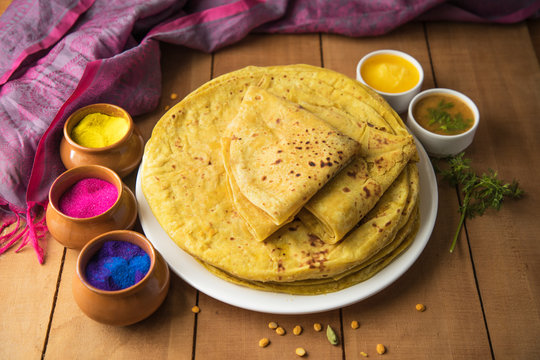
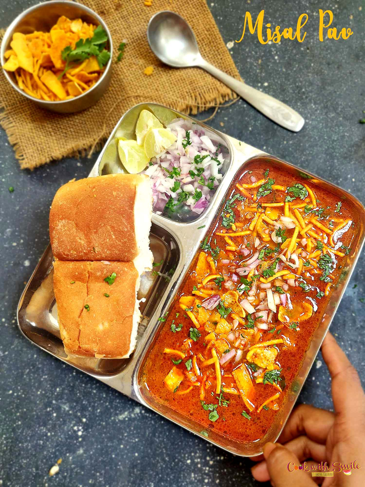
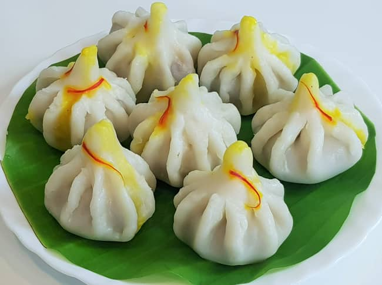

HELLO MAHARASHTRA!
HERE ARE SOME FAMOUS FOOD FROM MAHARASHTRA



Veg food which we can found in Maharashtra is
- PITLA
- ALUCHA WADYA
- PAAV BHAJI
- BHARLI VANGI
Some non veg food
- MUTTON RASSA
- KOLHAPURI FISH
- PITHLA
- Pithla is a traditional Maharashtrian recipe that is made with gram flour or as we call it, Besan. The gram flour is cooked along with garlic, green chilies, curry leaves, onions, coriander leaves, and spices.
- MUTTON RASSA
- Mutton rassa or Tambda rass is authentic Maharashtrain food recipe. This mouth watering recipe little bit difficult but it very tasty to eat. In kohlapur side it is known as tambada rassa.
A normal meal plate contains
| Sr No |
Dish Name |
| 1 |
Rice |
| 2 |
Mugachi Usal |
| 3 |
Amti |
| 4 |
Bhaaji |
| 5 |
Amras |
| 6 |
Roti |
| 7 |
Koshimbir |